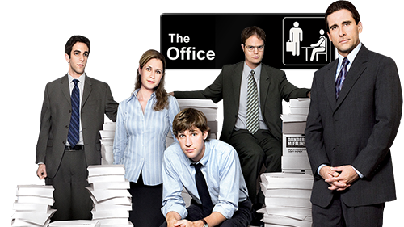
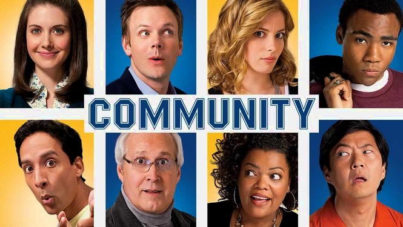

Lost
Lost was an American TV show that ran from 2004 to 2010. It was created by J.J. Abrams, Jeffrey Lieber, and Damon Lindelof. It begins as a story of how survivors of a plan crash are forced to work together to survive. It becomes much, much more.
To learn more about Lost, you can visit the show's Wikipedia page

The Office
The Office was an American TV show based on a british comedy. It ran from 2005 to 2013 and was created by Greg Daniels, Ricky Gervais, and Stephen Merchant. The show is categorized as a "mockumentary" on a group of typical office workers, where the workday consists of ego clashes, inappropriate behavior, and tedium.
To learn more about The Office, you can visit the show's Wikipedia page

Game of Thrones
Game of Thrones was a Action, Adventure, Drama that ran from 2011 to 2019. It was created by David Benioff and D.B. Weiss and based of a book series written by George R.R. Martin. It is about Nine noble families who fight for control over the mythical lands of Westeros, while an ancient enemy returns after being
dormant for thousands of years.
To learn more about Game of Thrones, you can visit the show's Wikipedia page

Community
Community was a show that ran from 2009 to 2015. It was created by Dan Harmon. It is about a suspended lawyer who is forced to enroll in a community college with an eclectic staff and student body.
To learn more about Community, you can visit the show's Wikipedia page
